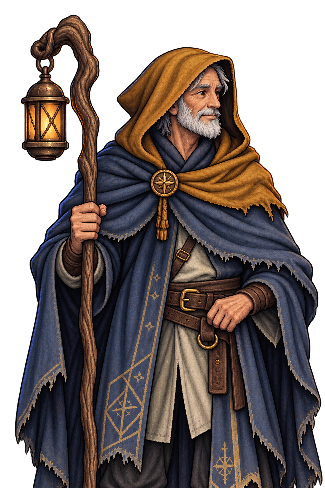
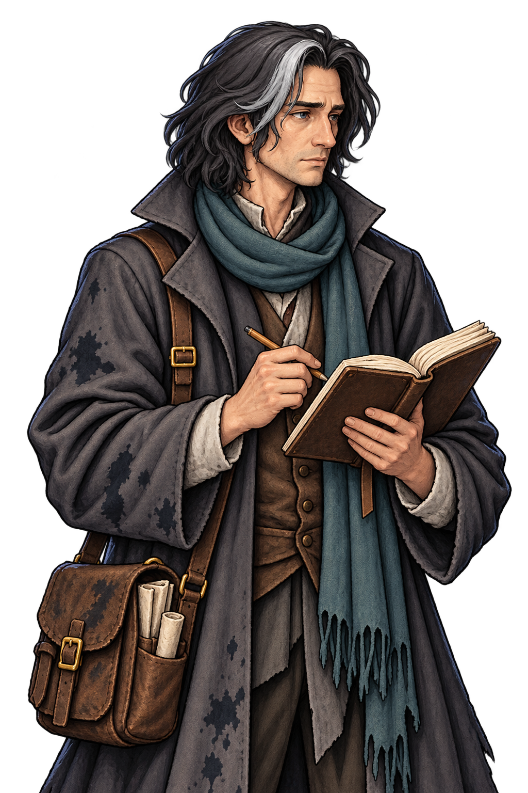
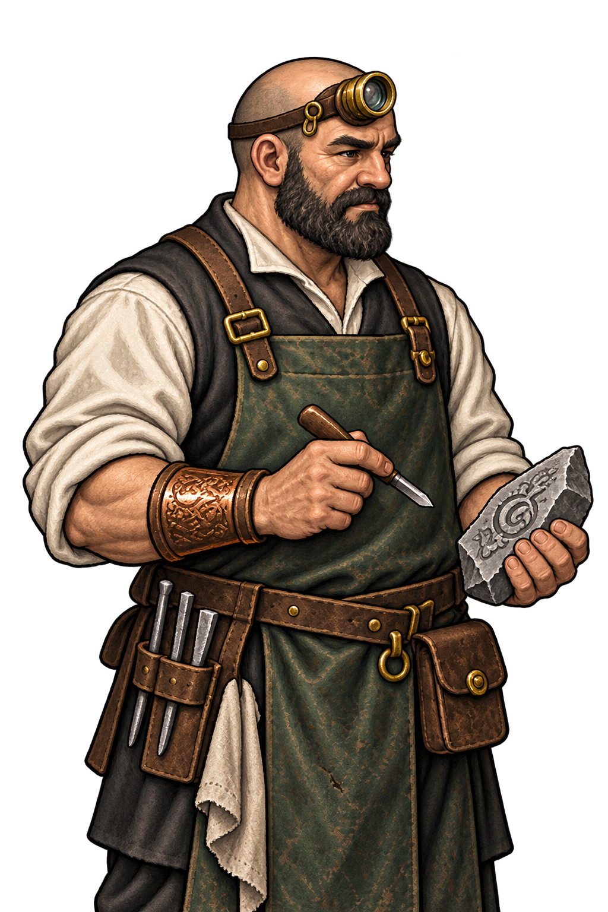
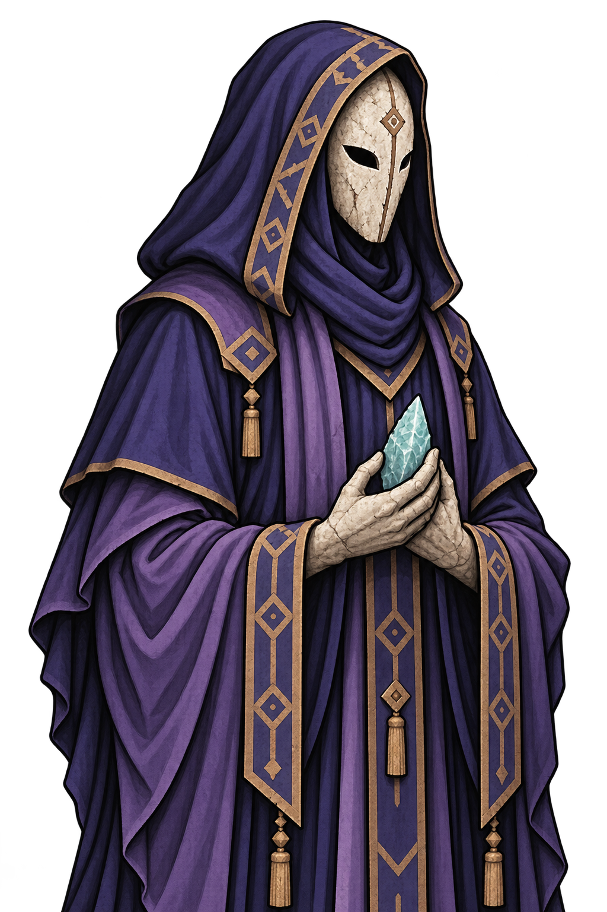
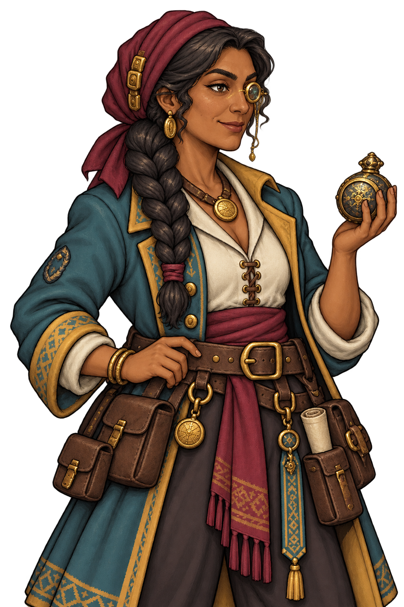
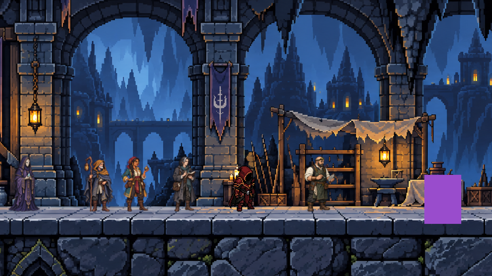
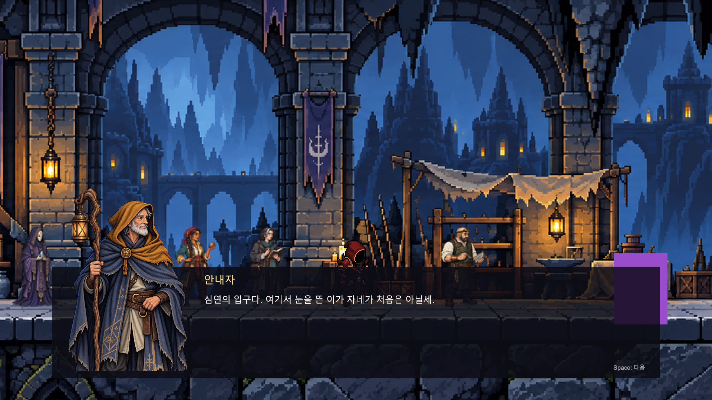

Abyss · 로비 NPCAbyss · 로비 NPC
5명의 스프라이트 · idle 애니메이션 · 대화 일러스트
각 idle은 4프레임, 초당 4프레임으로 반복됩니다. 숫자 버튼으로 자세를 비교할 수 있습니다.
안내자

프레임 자세히 보기 ↗기록자

프레임 자세히 보기 ↗각인사

프레임 자세히 보기 ↗제단지기

프레임 자세히 보기 ↗유물 상인

프레임 자세히 보기 ↗로비 적용 화면

대화 화면

Unity 에디터에서 애니메이션 프레임과 대화 UI를 표시해 렌더링한 검수 화면입니다.